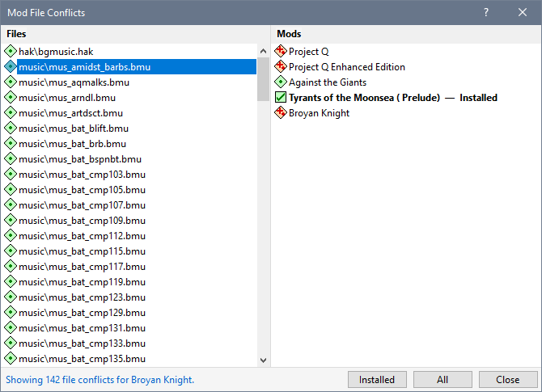

Select one or more Mods (or a Group to process all its member Mods), then click Mod File Conflicts on the View menu to see the file conflict information.

Typically, you would select one mod to view its file conflicts.
Analysing Mod file conflicts can take some time to complete depending on the total number of files defined in the Mod Installers.
|
Display Help information for Mod File Conflicts. |
|
|
Files |
Files that have conflicts are listed in alphabetical order. The status icon represents the status based on the lowest Mod priority. |
|
Mods |
Mods are listed in priority order (ie the order in which they are listed in the Mod List). The first Mod is the lowest priority while the last Mod is the highest. |
Buttons |
|
|
Selected |
Display file conflicts for all selected Mods. |
|
Installed |
Display file conflicts for all installed Mods. |
|
All |
Display file conflicts for all Installer Tool defined Mods. |